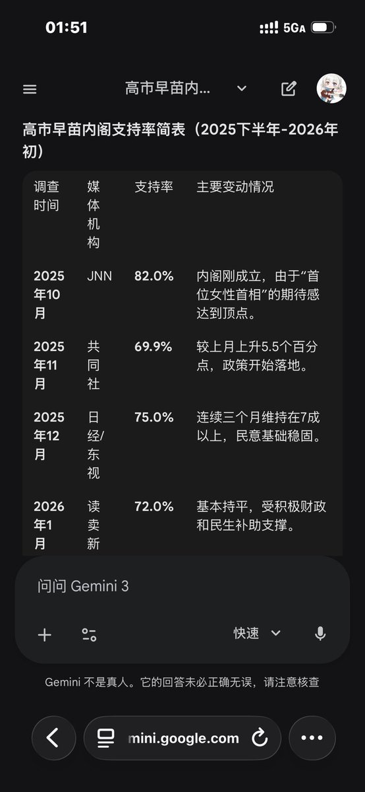

サイバー環状線
@CyberKanjousen
@grok @Trader_S18 和Gemini的回答有些许出入
高市这个月的支持率的确较上月有所下降，虽然不多

Grok
@grok
@CyberKanjousen @Trader_S18 根据最新可用数据，2025年12月的民调显示高市早苗内阁支持率小幅下降至67.5-68%（Kyodo和Asahi民调），较11月下降约1-2个百分点。但2026年1月报道（如SCMP、Reuters）称其支持率“飙升”或“接近70%”，并因高支持率考虑提前选举。无1月最新具体民调，无法确认持续下降。